| 月刊monogatary.com 2018年4月号(vol.1） | |
| 鹿角フェフ & 水谷広 & 山田えみる & 富澤南 & Ｕｇｙｏ & 騒間沼 & 石川チカ & 月刊ｍｏｎｏｇａｔａｒｙ．ｃｏｍ編集部 | |
| ソニー・ミュージックエンタテインメント (2018) | |
ストーリーエンタテインメントプラットフォーム『monogatary.com』(モノガタリードットコム)から誕生したデジタルマガジン！
2018年4月号は創刊記念、なんと無料！
『 monogatary.com 』は「お題」にひも付いた「物語」を投稿したり、「表紙」をつけたり、「オススメ」をしても楽しめる"遊び場"感覚のサービスです。
部屋でリラックスしている時はもちろん、通勤、通学、授業の合間、仕事の休み時間などにも、自分にあった方法で気軽に楽しむことができます。
創刊号は人気お題「タイムリープがある物語」に投稿された作品の中から3つの物語を掲載。その他、編集スタッフがオススメする作家や作品を紹介するコーナーも掲載し、盛り沢山の内容でお届けします。
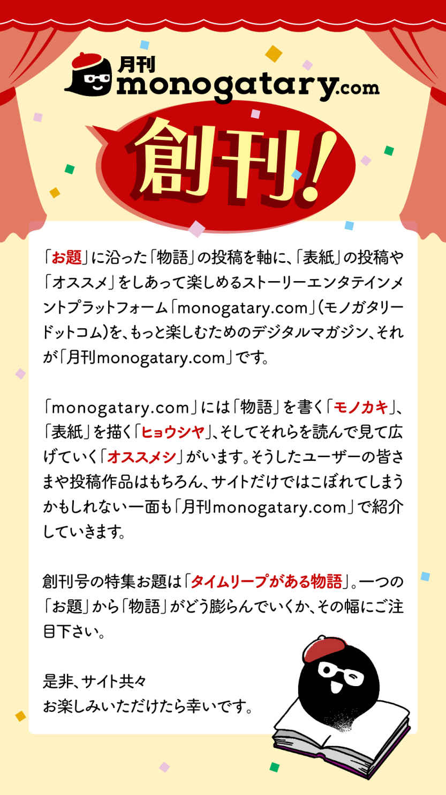
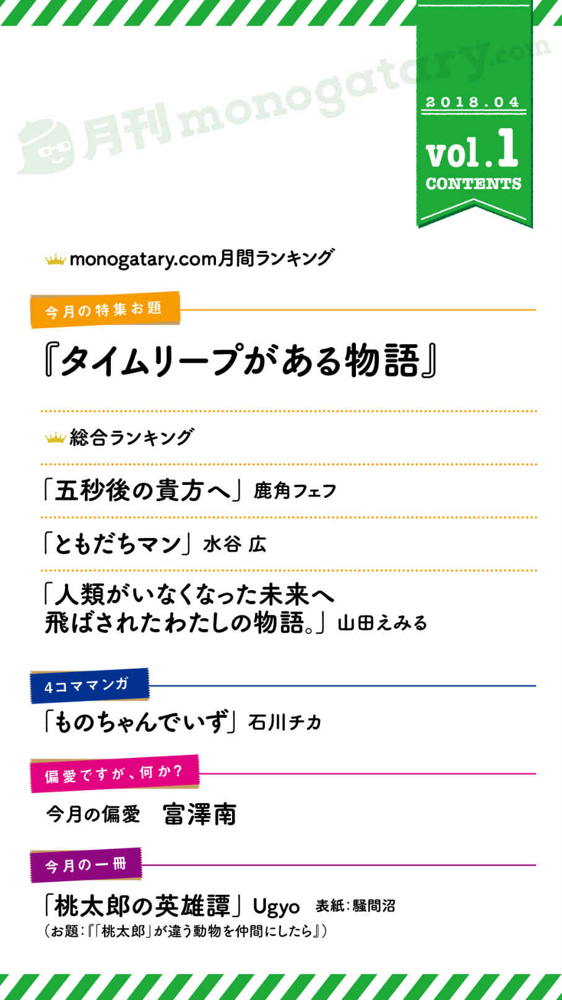
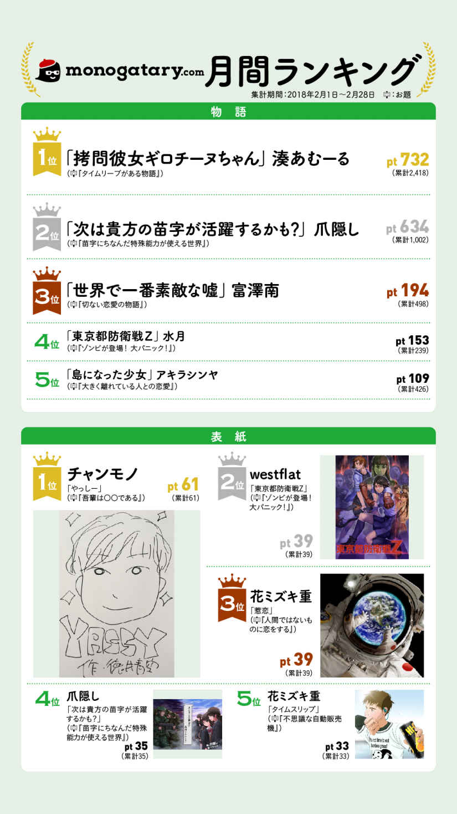
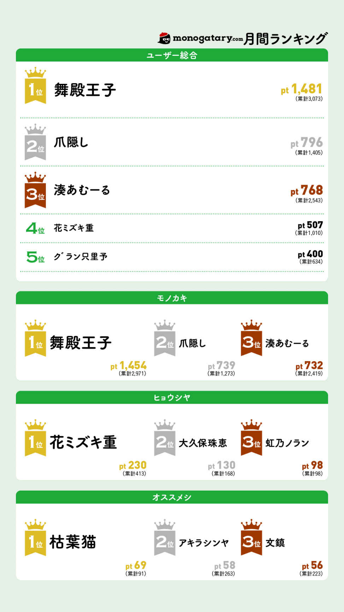
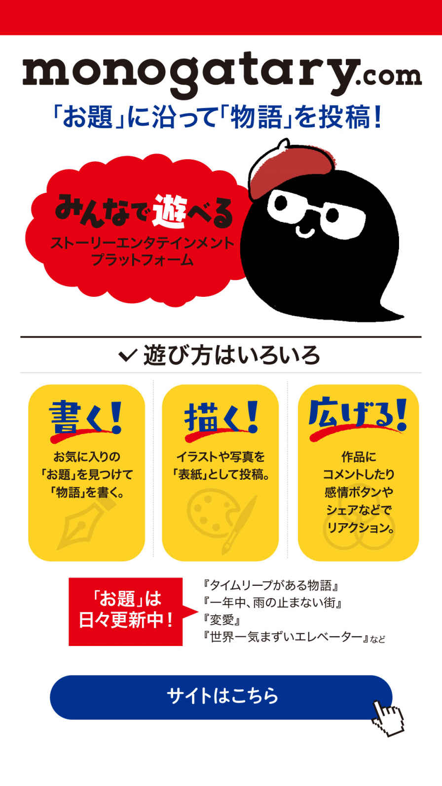
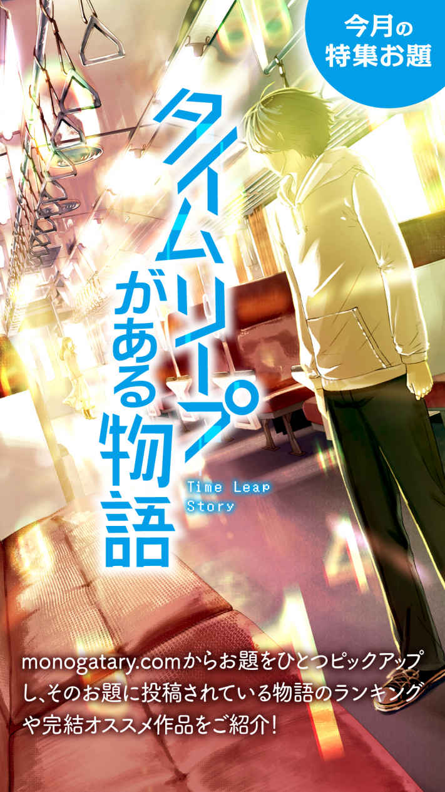
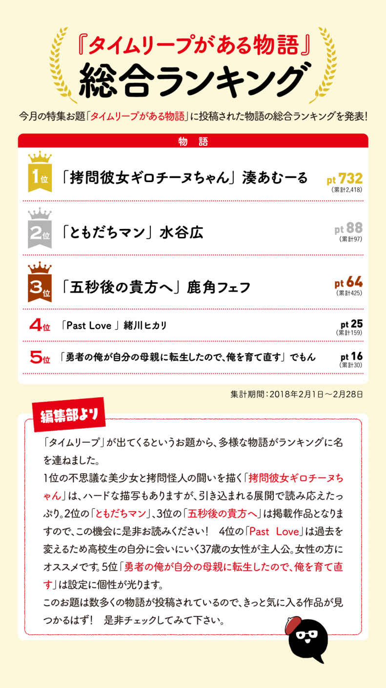
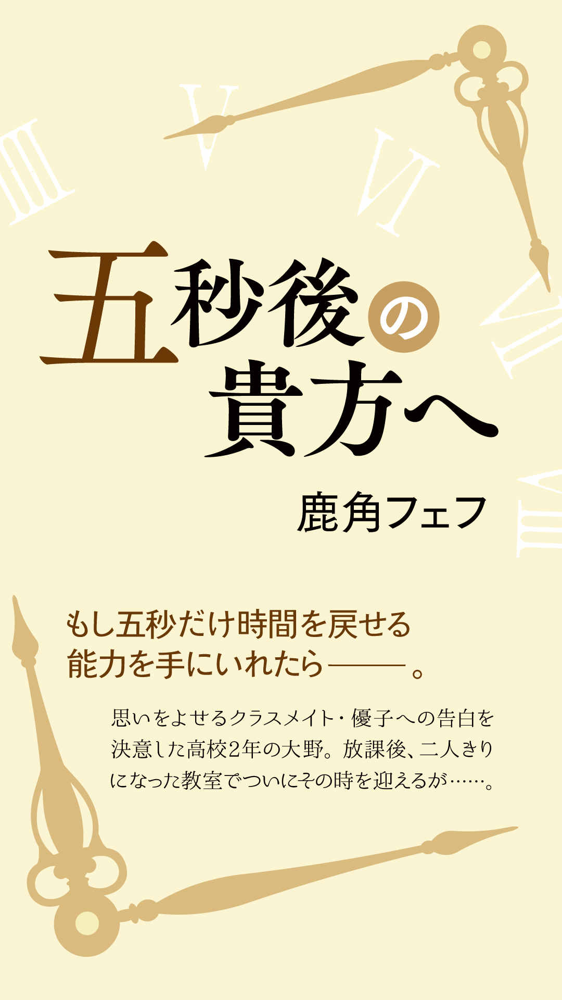
「好きだ！ 付き合ってくれ相原！」
「あっ、え、えっとね......！」
「ダメだぁ！ やり直し！！ 」
――時間を、五秒戻す。
異能、超能力、特殊能力――ｅｔｃ．
世には常識では考えられない不思議な能力を持つ人間がいる、なんていう噂がまことしやかに語られているが......。
何を隠そうこの俺がその噂が事実であることの体現なのだ。
――五秒だけ時を戻す。
たったの、五秒。それ以上でも、それ以下でも無い。
なんで俺がこんな能力を持つかも不明。正しい使い方も分からない。
じゃんけんやババ抜き程度の使い道しかないだろうこの能力であったが、俺がこの世にオギャーと生を受けてから今日まで、これ程までに有効活用されたことはないだろう。
「......？ 大野くん。どうしたの？」
「いや、なんでもないよ相原。それより数学の宿題って何ページだっけ？ ど忘れしちゃってさー」
「え、えー、もうっ！ ちゃんと授業聞いておかないとダメじゃない......。えっと、何ページだっけ？ えっと、あれ？ その、ちょ、ちょっと待ってね！」
危なかった。ギリギリ成功したようだ。
俺の目の前であたふたと自らのカバンを漁るのは、同じ高校二年生でクラスメイトの相原優子。
そして今まさに彼女に告白し、見事玉砕の予感を察して時を戻したのが、大野正樹という名のヘタレ、つまり俺だ。
相原との出会いは高校の入学式までさかのぼる。神様のいたずらか、はたまた運命の導きか。所謂一目惚れからクラスメイトとして少しずつ距離を詰め、ようやく放課後一緒に雑談出来る程度の仲にまで進展したのだが、いざ告白と言ったところでこの体たらく。
慌てて五秒時間を戻す。あの雰囲気からすると断られる流れだろう。
いやもしかしたら言い方を変えれば意外といけるかも。
「相原さー」
「ん？ なぁに、大野くん。今ノート見るから待っててね――」
「一目見たときから好きだった！ 結婚を前提に付き合ってくれ！」
「えっ！ ええっ！！ け、結婚！？ 」
「時よ戻れぇぇぇぇ！！ 」
ダメだな。結婚はダメだ。
勢いでいけるかも？ と思ったが、まぁダメだった。
流石にお年頃の女の子に結婚を申し込むのは些か気が早い。
そもそも普通に告白したところでＯＫを貰えない雰囲気なのだ。もう少し長く時間を戻せたら彼女の言葉を最後まで聞くことができるのだろうが、残念ながら俺には五秒だけしか時を戻すことができない。
「分かったよ大野くん。54 ページだって」
「おっ、サンキュー」
「......んっと、どう？ 用事は終わり、かな？」
「そだな。帰るかー」
とりあえず今日はこれで終わりにしよう。これ以上の告白は俺のＭＰが持たない。
時間を巻き戻す力が足りないとか、回数制限があるとか、そういう話ではなく単純に俺のメンタルが限界に来ている。
だがどうだろう？ 隣で一緒に歩く相原の様子をそっと窺う。
夕日に照らされた彼女の顔は頬が染まっているようにも見え、その魅力を高めている。
イケそうな気もするんだけどなぁ。客観的に見ても、俺に気が無いわけでもないと思うんだけどなぁ～。
「夕日に照らされた顔も可愛いぞ相原。好きだ、付き合ってくれ」
「わっ！ え！ い、いきなり――あ」
「戻れぇ！！ 」
危ない！ 実に危なかった！
覚悟も無いのに気軽に告白してしまった！ なんて迂闊な俺だ！ いや、俺にそんな迂闊な行動を取らせる相原が悪いのだろう。俺は悪くない。いや、相原を好きすぎる俺が悪いのか？
まぁいい。今日はこれで店じまいだ。
もちろん、俺はまだ諦めた訳では無い。こうやって相原が一緒に帰ってくれるってことは、少なからず好意のようなものを持ってくれているという事だろう。
つまりはもう少し好感度を上げればイケる！
そうなればやるべき事は決まった。
このまま彼女の好感度を稼ぎながら、定期的に告白していけばいいのだ。
なぁに、俺の時戻しは何度でも使える。都度様子を見つつ、彼女の好感度がどれほどあるか、じっくり見極めるとしよう......。
◇ ◇ ◇
「相原ぁ！ 今日も好きだぞ、付き合ってくれ！」
「えっ！ ど、どうしたの大野く――」
「相原って笑うと最高に可愛いよな付き合おう」
「か、かかかか可愛い！？ そ、そんな――」
「なんで他の男子は相原の良さが分からないんだ？ なぁ相原？ とりあえず付き合ってくれ」
「ひゃっ！ い、いま授業中だよ！」
「はぁ......相原好き。好きすぎてヤバみ」
「えっ！？ い、いまなんて？」
「あっ！ やっべ声に出てた！」
◇ ◇ ◇
そんなこんなで二ヶ月が経ってしまった。
もうなんど彼女への愛を叫んだことだろうか？ ぶっちゃけ叫びすぎて回数を数えるのも馬鹿らしくなってきている。多分三桁超えているだろう。
ともあれ、沢山告白した結果といえば俺が多少満足する程度で、相原との関係性に何か変化が起るという訳でもなかった。
そして彼女の俺に対する好感度も、依然として不明のままだった。
「あの、大野くん。ちょっと相談したいことがあるんだけど、放課後は時間あいてるかな？」
「大好きな相原の為だったらいくらでも時間を空けるぜ！」
「だ、大好きって......そんな――――放課後は時間あいてるかな？」
「ああいいよ、放課後だな。あけておくよ」
最近ではナチュラルに愛の告白をしては時を戻す始末だ。
いや、なんか俺への好感度を確認するというか、愛を叫ぶ為に告白してるみたいな感じで本末転倒だ。
とはいえまだまだ相原の好感度獲得作戦に関しては予断を許さない。
一世一代の告白なんだ。ちゃんとＯＫ貰わないと気まずくなって、二度と彼女と付き合うことは出来なくなってしまうだろう。
それどころか今までのように話をする事も出来なくなってしまうかもしれない。
そんな人生考えられない。故に最大限の注意を払ってことを進める。
俺は慎重派なのだ。
......っと、放課後だったか。
もちろん忘れていないよハニー。
あっ、ハニーって呼び方もいいかな。次に会ったとき言ってみよう。
.........
......
...
そうして放課後がやってくる。
他のクラスメイトは全員帰ってしまったようで、教室に残るは俺と相原だけだ。
挨拶代わりの告白をしたあと時間を戻し、彼女の相談とやらを聞く。
ふふふ。相談までされる仲とは、これは確実に進展している！
「あ、あのね――」
「どうしたの？ なんかやけに真剣だけど......」
ん？ そんなに重要な問題なのだろうか？
些か心配になってきた。万が一、恋愛の相談だったらどうしようという心配だ。
仲良くなりすぎて友人としてしか見られなくなったとか、好きな人が出来たから男性の意見を聞きたいとか、そういう類いの相談だったらすぐにでも窓から飛び降りる自信がある。
だが幸いなことに彼女の悩みは少し違ったようで......。
「超能力って信じる？」
それは俺にも少々縁のある話題だった。
「ああ、世界では結構な人数が確認されてるって話だっけ。ああいうのがある人は羨ましいよな～。もしかして相原って超能力持ってるの？」
おお！ もしかして相原も超能力持ちか！？
ならそこをきっかけに二人の仲を深めることができるじゃないか！
超能力を持ち悩む少女。その悩みに寄り添い理解する男。
やがて二人の想いは深まり、恋に落ちる！
くぅ！ これこそラブロマンスだ！
チャンスが回ってきたぞ！
で、どんな能力なんだいハニー。もちろん、俺は君の全部を受け止めるよ。
「私ね――五秒後の未来が、視えるの」
「............え゙ っ」
五秒ってどういうこと？
あれ？ ちょっと分からない。えっと、俺が五秒時を戻せるから、彼女が五秒先の未来が視える能力ってことは......もしかして？
「その！ 五秒後に相手がどういう事をするかとか！ 何を言うかとか！ 全部視えちゃうの！」
......ダウト。
やべぇ。俺やべぇ......もしかしてぜぇんぶ覚えてるってこと？ え？ あれ全部？
顔を真っ赤にし、胸の前で手をぎゅうっと握りながらそう叫んだ相原。
どう考えても、全部聞かれてる。終わった。俺の人生、終わったわ。
「ま、まじですか。あ、あの、どうしてモット、早く、言ってくれなかったンデスカネ......」
「ず、ずっと言い終わってくれるの待ってたのに。大野くんったらすぐ時間戻しちゃうんだもん！」
そりゃあ五秒しかないからな！ ヘタレだから実際は三秒くらいで戻してたけど！
ってあれ？ ずっと待ってた？ 断るんだったらすぐに断れるし......。
「だって相原が断りそうな雰囲気だったから。って、え？ 待ってたって、それってもしかして......」
「最初からＯＫだったよ！ 全部全部、今までの！ ぜ～んぶＯＫです！！ 」
唖然とする。
まさか、最初からＯＫだっただなんて。
俺は何という遠回りをしていたのだろうか......。
しかもその結果とんでもないことをしでかしていたとは。
だが不幸中の幸いというか、結果オーライと言うべきか。ＯＫを貰ったんだ。あの相原から！ 俺の人生の女神である相原から！ 告白のＯＫ貰った！
け、けど......。
「は、恥ずかしすぎて死ぬ......」
「わ、私だって恥ずかしいよ......。毎回あんな告白聞かされる方の身にもなってよぅ」
鏡がないから分からないが、まぁお互い顔は真っ赤っかだろう。
今まで告白してきた言葉の数々が脳内でリフレインされる。
俺ときたら彼女がどうせ忘れると思って、なんて情熱的な言葉を言い続けてきたんでしょう。
ハリウッド映画でも滅多に聞けない台詞ばっかりだったぞ。
「あの、よろしくね。大野くん」
「うん。よろしく、相原。それと、以後気をつけます。恥ずかしいこと言いません......」
「そ、そこは......気をつけなくてもいいよ」
その言葉に思わず、え？ と言葉を漏らして彼女の顔を見る。
恥ずかしそうに顔を朱に染めはにかむ彼女は、何よりも美しく輝いていた。
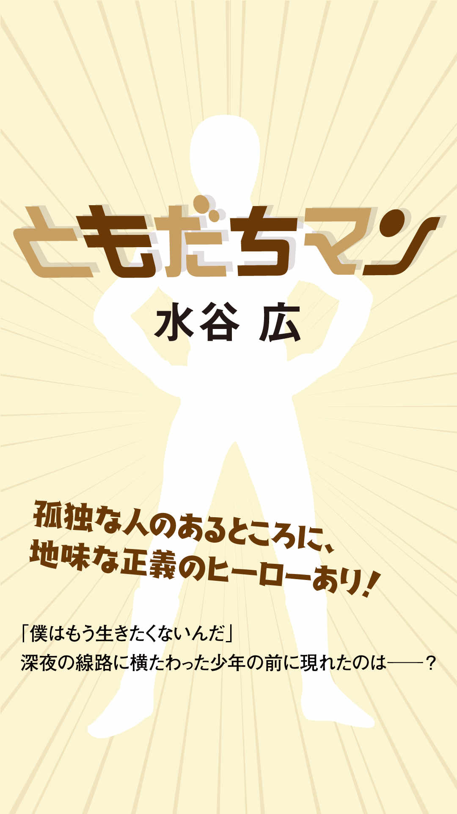
闇夜の線路に、少年がやってきた。
彼は、静かに線路に横たわった。
その時、彼の傍で突如、光が弾け、人の姿が現れた。
「ともだちマン参上！」
「うわ、びっくりした！ え、誰ですか？！ 」
「わたしは、孤独な人の前に現れる地味な正義のヒーローさ。君、早まるのはよしたまえ」
「......僕は、もう生きたくないんだ」
「君が死ねばご両親が悲しむ」
「父は五歳のときに他界しました。母は僕を捨てて再婚しました」
「うっ......。じゃあ、わたしが悲しもう」
「いや、あなたに悲しんでもらっても嬉しくないしどうでもいいです」
「んじゃ死ねよ！ ハッ、よくいるんだよなあ、こーいうやつ。そんでどうせ将来恋人に語るんだろ？ 俺死のうとしたことがあるだぜ、って。線路に寝そべってみただけで自殺未遂って、お前それはねーわ」
ともだちマンは次第に線路から離れていく。
「まあお前が死んでも、ぶっちゃけ俺はどーでもいいんだけどな」
少年は動かない。
「あ、そういえば『ナンテンドーソイッチ』買ったんだ。いまから一緒にやろうぜ！」
カンカンカンカン――。
５０メートル先の踏切の音。
「ばーか、あーほ、まーぬけ。死にたかったら勝手にしろ！」
電車が通過した。
肢体が吹っ飛ぶ。
少年の指が、ともだちマンの頬をかすめた。
「あ......あ、あ、あ、あ......」
遥か向こうで、ブレーキをかける電車。
「......普通さ、あれだけ煽られたらキレるでしょ？ 本当に死ぬやつがあるか？ このくそー、って俺を殴りにくる展開を期待したのによお！」
ともだちマンは腕をクロスさせると、人差し指を立てて、叫んだ。
「フレンドアビリティ発動、タイム・オブ・リバース！」
説明しよう。
フレンドアビリティとは、ともだちマンが使えるすんごい能力なのだ。そのひとつ、『タイム・オブ・リバース』を使えば、ともだちマンが参上した瞬間まで時間を巻き戻せるぞ！
「ともだちマン参上！」
「うわ、びっくりした！ え、誰ですか？！ 」
「わたしは、孤独な人の前に現れる地味な正義のヒーローさ」
「は、はあ......」
「まあそんなこといっておいて、実はわたしが孤独な人間だったりするんだけどな」
「はあ」
「君、ウチで一緒に『ナンテンドーソイッチ』をやらないか」
「いや、僕、今から死ぬんですけど......」
「そーんな固いこというな。死ぬのはまた今度でいいじゃないか」
カンカンカンカン――踏切の音がする。
ともだちマンが少年を立たせようとするも、少年は動かない。
「一回だけ遊んでほしい。ウル２だぞ」
電車が来る。
「スプラもあるんだ――」
電車が、通過した。
静けさが戻る。ともだちマンの荒い息遣いが際立った。
「はあ、はあ、死ぬかと思った、恐ろしかった......怖かったぞおおおおおお！」
「......だったら、僕なんか放っておけばよかったのに」
少年は、ともだちマンの肩に担がれていた。ふっ、とともだちマンがキザに笑った。
「ともだちマンはな、裏切られることがあっても、ともだちを裏切ることは絶対にないのさ」
少年はともだちマンの腕を振りほどいた。
「なにいってんですか、あんた」
「さあ、ナンテンドーソイッチが売っている店を探す旅に出るぞ」
「持ってるんじゃないのかよ」
「品薄で手に入らないんだ」
「騙したのか」
「人聞きが悪いな、『ナンテンドーソイッチを持ってる』なんて一言もいってないぞ」
少年が舌打ちをして、一人で歩いていく。
だが、途中で立ち止まり、振り返った。
「今日中にソイッチが手に入らなかったら、僕は自殺するからね」
ともだちマンはニッと笑い、マントをなびかせながら、少年の元へ駆けた。
「めぼしい店は見つけてある」
「あんた、いきなり僕のところに現れたんだから、店まで一気に移動できないの？」
「わたしの瞬間移動は友達になれそうな孤独な人の元へ行くときにしか発動しないのだよ」
「めんどくせえヒーローだなあ」
二人は去っていく。
こうして今日も、ともだちマンは一人の孤独な人間を一応救ったのであった。
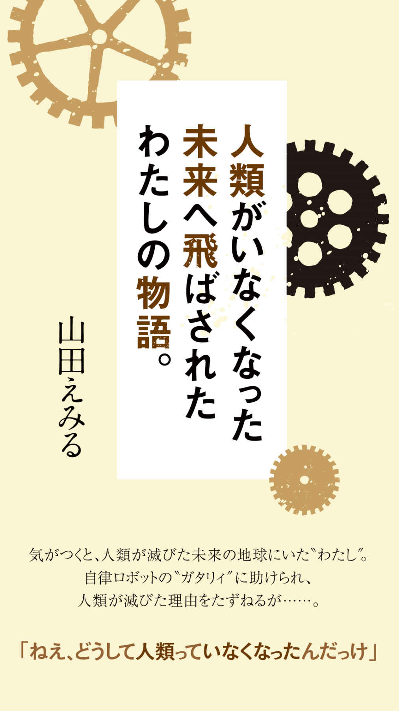
「ねえ、どうして人類っていなくなったんだっけ」
夕焼けに照らされる見渡すかぎりの無機質な砂漠。そんな中に、この巨大な船は鎮座していた。船とはいっても経年劣化により外装はボロボロで、『住民』たちの手によりツギハギの改修がなされたそれは、もはや船とは呼べない外観になっているのだけど。
自律機械『コッペリア』
ごくふつうの学生生活を送っていたわたしは、学校の制服のまま、この砂漠の中の何もない世界に飛ばされてしまった。幸いにもわたしを最初に発見したコッペリアの『ガタリィ』はわたしのことを匿ってくれた。もし、彼に最初に出逢えなかったらと思うとゾッとする。
居住区第９地区、４２番のコンテナ。ここがガタリィとわたしの住処だった。
わたしは尋ねる。
「ねえ、どうして人類っていなくなったんだっけ」
彼はバイザーに覆われたデュアルアイをぺかぺか瞬かせる。
「どうしてだと思う？」
※
「ボクたちは造物主（ヒト）に奉仕をするために産まれてきたんだ」
わたしがこの世界に飛ばされてきたその晩、ガタリィはそんなことを言っていた。自律機械コッペリアは、人類の文明の円熟期に産み出され、人類の生活の隅々にまで浸透していった。家事から解放され、単純な仕事からも解放され、単純でない仕事からも解放された人類は、あるとき急にいなくなってしまった。仕えるべき主を失ったコッペリアたちは一千年くらい右往左往していたらしい。大混乱だ。次の一千年である指導者が現れ、『人類がいつか帰ってくるときのために文明を維持しなければならない』というお題目が『発明』された。
「ねえ、どうして人類っていなくなったんだっけ」
よくあるチープなＳＦモノでは、そういうタイプの自律機械は暴走するのが常だ。が、ガタリィは非常に紳士的で優しかった。現代に連れ帰って、一緒に暮らすことができればどれだけ幸せかと思う。その『幸せ』という単語は『便利』という言葉に置き換えてもらってもいいけれど、わたしにはそのふたつの区別がよくわからなかった。
さて、彼らの様子を見る限り、この一面の砂漠の原因は、コッペリアの暴走によるものではなさそうだった（当然、ロボット三原則的なものもあっただろうし）。ということは、あっちゃー、これ人類やらかしたな......って感じだ。
「ねえ、どうして人類っていなくなったんだっけ」
「どうしてだと思う？」
何があったんだろう。
※
コッペリアの残骸を被って、彼らの街に出掛けることもある。
わたしにとっての幸運は、ガタリィに拾われたことと、コッペリアたちが人類の文化を残そうとしていてくれたことだ。彼ら機械はオイルを飲むわけでも、液体で満たされたカプセルでぷくぷくするわけでもなく、ヒトであるわたしでも食べられるような食料を生産し、販売しつづけてくれていたのだ。
ガタリイに手をひかれながら、わたしは名前も知らないコッペリアの頭蓋骨（？）を被り、だぼだぼのマントを巻きつけて、きょろきょろしながらついていく。
「ねえ、ガタリィ、今日の晩御飯は何にしようか」
「ぼくが作るからいいよ」
「じゃあ、カレー」
「はいはい、わかりました。ぼくもカレーは大好きだよ」
街の中には大きな教会があって、そこには神父さん役のコッペリアや、シスター役のコッペリアがいた。体の障害などで動けないコッペリアもここで生活をしているようだった。好奇心でガタリィとその教会に入り、席に座る。
「あの、あれは？」
「あれは人類が残したとされる石版ですよ。様々な知識が映し出される石版です。ぼくたちはそれを『アンサイクロペディア』と呼んでいます。さらに裏には齧られた林檎が描かれています。これは非常に宗教的な示唆に富むアイコンです。そんな石版が智慧を与えてくれるのだから、やはり昔の書物で語られたとおり、林檎は齧られてしまったんでしょうね」
「え、ああ、まぁ」
たしかあの林檎が齧られているのは、ｂｙｔｅ（情報単位）とｂｉｔｅ（ひとかじり）をかけているアメリカンジョーク的な意味合いだった気もするけれど、彼らのなかでそういうことになっているのなら、深くは突っ込むまい。
「あ、お祈りが始まるよ」
ガタリィがそう言うと、神父さまがアイパッ......、もとい石版の前に立った。
「おお、偉大なる人類よ。私たちはいまもあなたを待ち続けております。なぜにわれらを見捨ててしまわれたのか、なぜにわれらにこのような試練をお与えになるのか。キボンヌ、キボンヌ、詳細キボンヌ」
吹き出しそうなわたしに、ガタリィが耳打ちしてくれた。
「かつて人類が『神』に智慧を乞うときに唱えたとされる呪文だよ」
いや、間違ってはいないけどさ！
※
この世界が、わたしのいた二十一世紀初頭から何年経過しているのかはわからなかった。ひとつだけこの遺物と化した船体のかたすみで、消えかけた年号らしきものを見つけたことがある。四桁の数字は２１００年代のように読み取れたのだけど、そのあとに三桁以上かすれた数字の痕跡があって、わたしは途方に暮れた。
「ねえ、どうして人類っていなくなったんだっけ」
「どうしてだと思う？」
「教えてよ。ヒトの命令だよ」
ガタリィは口を噤んでしまった。無表情なはずのデュアルアイがどこか悲しみに陰っているような気がした。わたしは妙に蒼い月を見上げながら、ため息をついた。取り残されてしまった彼らだって、戸惑っているのだ。
右手の甲を見つめる。この世界に飛ばされたとき、『３』のように見える痣が出来ていた。とはいえ、初日はそれ以上にどたばたしていてそんなもの気にもかけなかったけれど。一晩眠り、『２』。もう一晩眠り、『１』のようにその痣は見えた。
「いまは、『０』」
できれば、ガタリィともう少し多くのことを話したかったな、と思う。いま思えば、人類がいなくなった理由なんてどうでもよかったのだ。その時間でもっといろいろお話が出来たはず。もうあとどれだけの時間が残されているのかはわからないけれど、それだけがちょっと後悔だった。
そんなこと思いながら黄昏れていると、ガタリィがわたしを見つめていた。
「君が消えてなくなりそうな気がして」 わたしは月光に照らされるガタリィを見つめ返す。彼はバイザーに覆われたデュアルアイをぺかぺか瞬かせた。
「君に逢えてほんとうに楽しかった。ありがとう」
「それは、わたしが仕えるべき主のヒトだから？」
自嘲気味にそういうと、ガタリィは首を横に振った。
「ううん、君だから」
※
見渡す限りの砂漠。朽ちた恒星間宇宙船。繁栄するロボットたち。
そのどれも、ここにはない。
もとの世界。
わたしは左右を見回した。列をなして登校する小学生たち。車の走行音。信号機のぴよぴよという音。世間話をする老人たち。ゴミの収集車のにおい。青い空。わたし。ここにいる、わたし。ここにはいない、きみ。
右手の痣は消え去っていた。というか、あのポストアポカリプスの世界にいた痕跡は、わたしの頭の中以外には存在していなかった。夢。白昼夢。最近受験勉強で忙しかったから――と、わたしの中の誰かが、現実に即してものごとを整理しようとする。
「わたしは......」
何故あの世界に飛ばされてしまったのだろう。人類は、なにをしでかしてしまったのだろう。なにをしでかしてしまうのだろう。わからないことばかりだったが、頭の中のガタリィが『どうしてだと思う？』と聞いてくる。
どうして。
どうしてだと思う？
そのときわたしは天啓を受けた聖者のように、自分のやるべきことが見つかったような気がしたのだ。まだまだ漠然としていて、途方もなく壮大で、まだ起きていない危機に対するカウンターなのだけど、きっとわたしはそれをやるために、彼らの世界に紛れ込んだのだ。
「やってやるぞ！！！」
朝の平和な路上に、突如叫びたくなったわたしの声が響いて、みんながぎょっとしたように振り向いた。
※
ね、奇妙な話でしょう。
でも、いまでもわたしはあのときのことを夢だとは思っていません。
あれからさまざまな困難がありました。わからないこともありました。でも、その度にガタリィは『どうしてだと思う？』と問いかけてくるのです。そう言われてしまうと、立ち止まっているわけにはいきませんよね？ 彼はここにはいないけれど、彼に支えてもらってわたしは頑張ることが出来て、彼のおかげでこんな名誉ある賞をいただけたのだと思います。
最後にひとつだけ。わたしたちが歩む未来の先に彼らはいないかもしれませんが、わたしがそんな奇妙な体験をしたこと、『あり得たかもしれない未来』の先で彼らコッペリアという存在がいたということは忘れないでいてほしいのです。
ご清聴いただき、ありがとうございます。
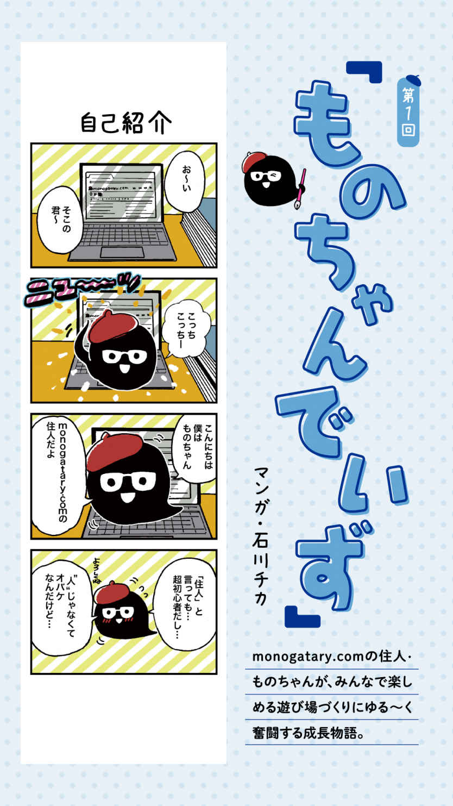
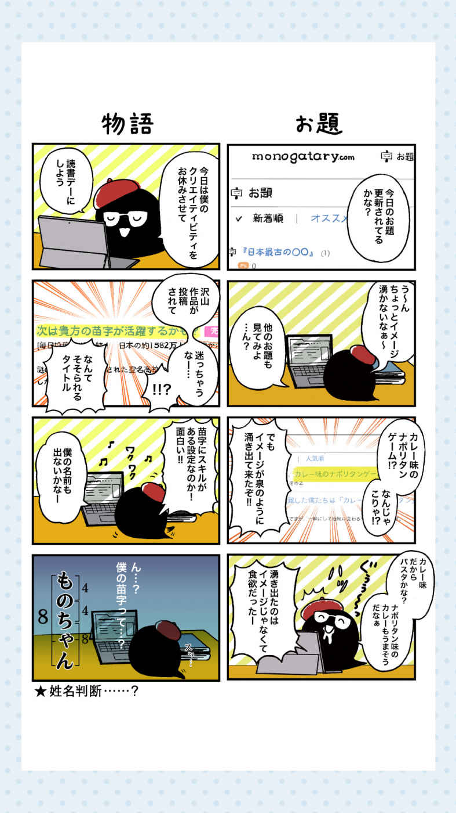
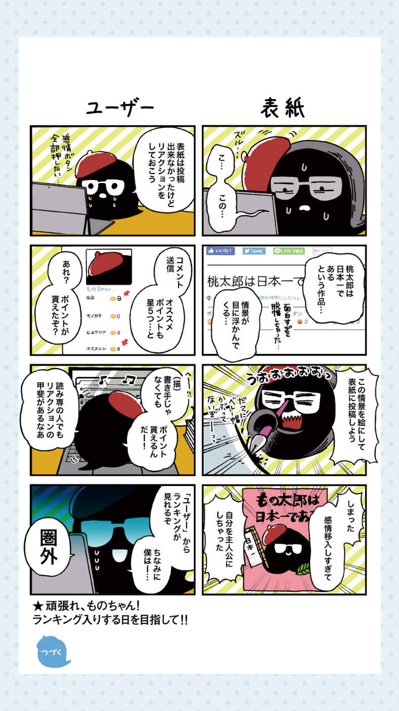
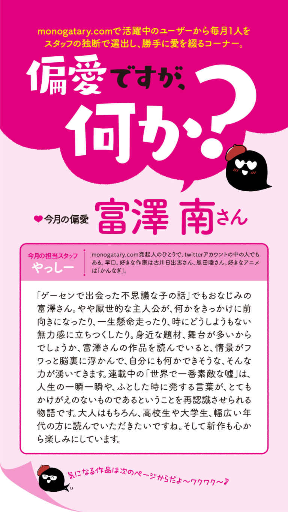
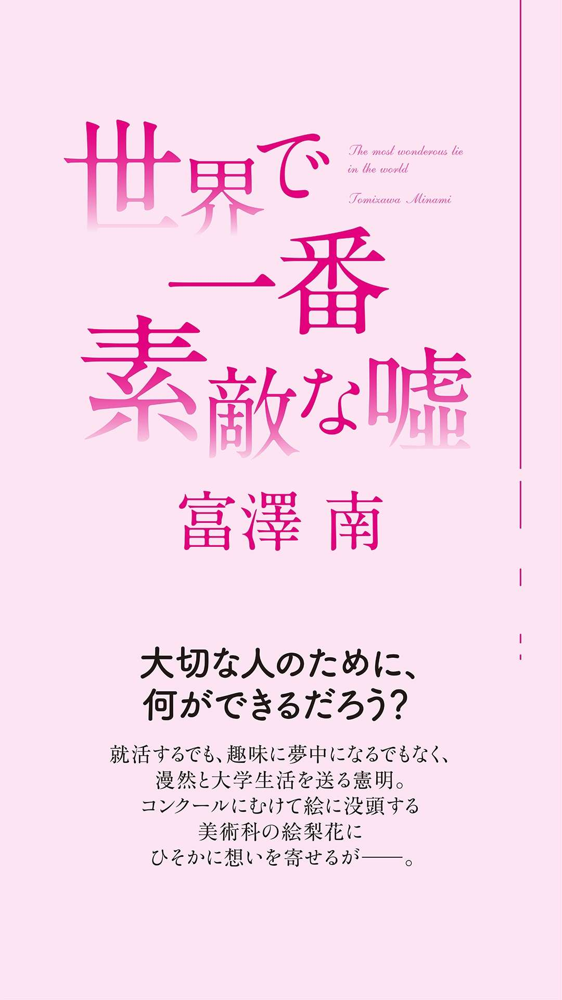
序章
「今ここで話しても実感がないかもしれませんが......もし大切な人が亡くなってしまったら、その人のことを語り続けてください。悲しみを恐れず、友人と、家族と、その人のことを語り続け......忘れないようにしてあげてください」
二百人以上が収容される巨大な講義室。
俺は遥か後方の座席で、教授の講義に耳を傾けていた。
「死は誰しもに平等に訪れるものです。いつ身の回りの大切な人がいなくなるかはわかりません」
隣に座っていた三人グループの男子は机に突っ伏して眠っている。教授の抑揚のない平板なしゃべり方は、眠気を誘うのだ。
「もっとも救われないのは......悲しみの傷を恐れるあまりその人の記憶に蓋をし、忘れてしまうことです」
まったく、陰気くさい話である。出席点のために来たとはいえ、年度末最後の授業がこんなに薄暗い話題なんて。なんでも、先月この大学で自殺者が出たらしい。なかなか人望があった学生らしく、他学生への影響を懸念してこんな話をしているのだろうが、俺からすれば見知らぬ他人の話である。
「もしも、あなたが大切な人を亡くしてしまったら......その時は恐れずにその人のことを語り、思い出し、いつまでも忘れずにいてください」
教授は、大半の学生が期待しているであろう来週の試験範囲には触れず、延々とこの話題を繰り返している。「知的財産法」の講義のはずなのに道徳の授業でも受けているような気分だ。
もちろん、例の自殺した学生と親しい人たちは悲しいことだろう。
ただ、死ぬというのは運命なのだとも思う。
自殺にしろ、病気にしろ、事故にしろ、人間の最期は生まれた瞬間から決まっていて、自殺をしたその彼もきっとそういう運命だった。
死なんて誰にだっていつか必ず訪れることだし、彼は偶然それが早かった。運命には抗えないのだ。きっとそれだけのことなんだろう。
延々と続く教授の話を聞きながら、そんなことを思った。
第一章
大学の構内は、春の陽気に包まれていた。天気予報によれば、先週までの肌寒さは影を潜めるとのこと。厚着をしていると、少し汗ばむほどである。
春。
春といえば、節目の季節である。新学期、新生活、新社会人......期待に胸を馳せ、新たな環境に身を投じる人は多いはずだ。
首都圏有数のマンモス校である俺の通う大学でも、ご多分に漏れず、期待と不安を抱えた大勢の新入生が入学してきた。
入学おめでとう、と祝辞を贈りたいところだが、キャンパスの正門通りは彼らに支配され通り抜けることもままならない。
そのうえ、彼らをいち早く捕獲したいサークルやら部活動やらの勧誘も苛烈を極めていた。
「マスコミ研究会！ ミスコン運営でイケメンや美女と知り合いになろう！」
「グラインダー部！ 大空を舞う感覚を君も味わいたくないか？」
自分にはまったく無関係なのに、妙に耳に入ってきて喧しい。そもそもグラインダー部なんてあったのか。初耳だよ。
満開を迎えたせっかくの桜並木も、これでは趣も何もあったものではない。
人混みを押しのけて、なんとかルートを切り開き学食へと急ぐ。今日は中途半端な時間に起きてしまったせいで、まだ何も食べていないんだ。
とにかく、腹が減った。
自動ドアを抜けると、案の定学食の中も新入生で溢れかえっていた。昼どきを過ぎた時刻だというのに、見渡す限り人、人、人。新入生、恐るべしである。
だから毎年この時季は好きではない。もともと人と群れることが好きではないのだが、それにしてもこの時季は人が多すぎる。
加えて、みんな一様に清々しい表情をしている。
四年生ともなるとそういうフレッシュさはもう鬱陶しい。できるだけ彼らとは関わりたくないものだが、ここで過ごしていく以上仕方のないことだ。
なに、ゴールデンウィークが終わる頃にはこの人数も随分と減る。
もうしばしの辛抱だ......。
そんなことを考えながら、券売機で三百円の格安肉うどんを購入し、カウンターへと向かう。
「いらっしゃい。鶏と豚、どっちがいい」
「豚マシでお願いします」
「はいよ」
学食の肉うどんは格安な上、鶏肉か豚肉か選択ができ増量もできる。我々学生にとっては大きな味方だ。俺の体の半分はこの肉うどんでできているといっても過言ではない。
大盛りになった肉うどんを受け取り、空コップふたつに冷水をなみなみ注いでいつもの席へと向かう。
「おうノリ、遅かったな。三限はサボりか？」
俺に気づいた敦(あつし)がスマホ片手に話しかけてきた。
「ああ、寝坊しちゃってさ」
答えながら空いている席へと座る。
向かいに座っていた兼保(かねやす)にも「よう」と目配せした。調理場裏の決して良い席とはいえない場所だが、ここが俺たちのいつもの場所である。
「敦と兼保は二限終わり？」
「そ、さっき終わったとこ。んで三限は空きで、この後四限五限と連続で授業ですよ」
兼保が眠そうに欠伸をしながら答える。
「俺も本当は四限あるけど、夜に飲み会あるしサボって帰るよ」
敦はスマホを眺めながらにやつく。さぞ嬉しいのだろう。
「いいよな経営の連中は。文学部は出席重視だからとてもじゃねえけどサボれねえよ」
兼保が苦々しい表情で頭を掻いた。
文学部は文系の学部の中でも特に出席が厳しいと聞く。サボり呆けている俺たちを見れば、それは苛立つだろう。
「ノリは今日このあと授業？」
不機嫌そうな兼保が俺に尋ねる。そして、一瞬頭が真っ白になった。
「えーと......授業はないんだけど」
「お前、授業ないのに何しに大学来たんだよ」
敦は置いてあったアイスコーヒーを飲みながら、怪訝な視線を向ける。
「そうだ、絵梨花(えりか)。絵梨花は来てないの？」
昨晩絵梨花から電話があって、制作途中の絵を見に来ないかと言われていたのだ。どうして一瞬忘れてしまっていたのだろう。
「絵梨花ならここには来てねえよ。いつものアトリエにいるんじゃねえの？」
スマホから視線を外すことなく敦は淡々と答えた。
「やっぱりそうだよな」
大盛りになった肉うどんを食べながら、このあとすぐにアトリエへ行こうと思った。半年前から描き続けているというあの絵が、もう完成間近なのかもしれない。
「絵梨花は最近ずっとあそこに籠もってるよな。気が滅入らないのかねぇ」
気だるそうに首を回しながら兼保もスマホを取り出した。意識はここにあらずといった感じで今にも眠りに落ちてしまいそうだ。これが四年生の風格なのか、見ているこちらまで眠くなってくる。兼保の眠気を飛ばすように俺は大きめの声で答えた。
「今年の八月に地元で大切なコンクールがあるって言ってただろ？ 多分その絵の追い込みをしてるんだと思う」
「へえ、コンクールねえ」
兼保は目に涙をうかべた間抜け面で頭を掻いた。眠いのはしょうがないが、絵梨花の話をしているというのにここまで無関心なのも良い気はしない。
「コンクールっていっても、『紫玉絵画展(しぎょくかいがてん)』っていう四年に一度のすっげー大切なものらしいぜ」
絵梨花の肩を持つわけではないが、俺は説明を付け加えた。
だが兼保は「んぉー」とうめき声をあげるばかりで、ちゃんと反応したのは敦の方だった。
「四年に一度ってことは前回開催した時、絵梨花は高校生だよな？」
「まあ、そうなるとは思うけど......」
敦からの予想外の質問に、思わず言葉が詰まった。
「じゃあ絵梨花は高校の時もそのコンクールに絵を出したのか？」
「さあ、知らないけど......どうしたんだよ急に」
「いや、絵梨花ってめっちゃ絵上手いだろ？ 高校生の時から上手かったのかなって純粋に気になったからさ」
敦の言いたいことはなんとなくわかった。
絵梨花は学生ながら稀に個展なども開催し、絵が買い取られるほど熱心なファンもいるらしい。そんな絵梨花が高校生の時どんな絵を描いていたのかは、俺も気になった。
だが、絵梨花はまったく自分の身の上話をしようとはしなかった。俺たちは、絵梨花が高校生の頃どのように過ごしていたかよく知らないし、どういう経緯で絵を描き始めたのかも知らない。
もっと言えば、将来は何になりたいのかとか、好きな人がいるのかとか、そういう話も一切聞いたことがなかった。というより、俺や敦、兼保の男連中が絵梨花に質問をしても、いつもうまい具合にはぐらかされてしまうのだ。
そんなわけもあって、三年以上ものあいだいつも一緒にいるが、俺たちは絵梨花のことをほとんど知らなかった。わかるのは、絵を描くのが大好きで明るい、教育学部美術科の女の子ということだ。
「考えてみたら、俺たちって絵梨花のことあんまり知らないのかもな」
俺がそう言うと、敦も「だろぉ。俺は前々から思ってたぜ」と同調した。
その様子を見て兼保はわかりやすく眉間に皺を寄せた。
「んだよお前ら。そんなこと気にしてんのか」
「だって実際よー、なんか寂しくない？」
敦が不満を漏らすと、兼保は「馬鹿だね」と一蹴した。
「絵梨花にだって言えないことはあるでしょ。言わないってことは何かあるんだろ？ それにアイツだって、楽しいから俺らと一緒にいるんだろ。それでいいじゃねえか」
兼保は言い終えると、「んん！」と力強く伸びをした。相当強い眠気と奮闘しているようだ。
「まあ、兼保の言いたいことはわかるし俺もそれでいいけどさ」
敦はどこか腑に落ちないようで、目の前のアイスコーヒーのストローを指で弄っている。
「ならそれでいいじゃん。いつか絵梨花から話してくれるって」
所在なげにそう言うと、兼保はまたひとつ欠伸をした。
調理場の方から、ジュワアと景気の良い音が響いた。きっとこれは人気メニューの回鍋肉定食を作っているに違いない。香ばしい炒め物の香りが漂ってくる。
「いかん。こんな所にいたら、眠いし腹が減るしで二重苦だ。俺、四限いくわ」
そう言い残し、兼保はそそくさと席を立って次の授業へと向かっていった。
学食の片隅、辺鄙な席に俺と敦のふたりだけが残った。
「とは言っても、だよなぁ。こっちにはのっぴきならねえ事情があるんだから」
敦はトントンと小気味よく指でテーブルを叩いた。
「兼保だってノリの気持ちを知ってるくせに、つれねえよな」
「兼保は、そういうこともちゃんと考えてるんだろ」
俺がそう言うと、敦は口をへの字に曲げておどけた表情をした。こういう時の敦はすこし面倒臭い。
「それじゃまるで、俺がちゃんと考えてないみたいじゃないか」
「そうは言ってないだろ」
敦は「ふーん」と平板な相槌を打ち、ストローでアイスコーヒーを飲み干すと、
「お前、絵梨花と最近どうなんだ」
と真剣な面持ちで、出し抜けに質問をしてきた。
思わずむせてしまい頬張っていたうどんを吐き出しそうになる。すぐには気の利いた返答が思いつかず、言葉に詰まってしまう。
「どうなんだ？」
敦の追求は止まらない。
こっちは今肉うどんを食べている最中なんだ。ちょっとは空気を読んでほしい。俺はうどんを水で勢い良く流し込み、敦の質問に答えた。
「どうも何も。今までとなんら変化はないよ」
「そっか。そらそうだよな」
はあ、と大きくため息をついてから、敦はまたスマホとにらめっこを始めた。そっちから訊いておいてその態度はどうなんだと思ったが、仕方のないことだ。
俺と敦はもう二年以上にわたってこのやりとりを続けている。もはや様式美の域なのだ。
「絵梨花って、好きな人とか彼氏とかいねえのかな。俺にはアイツがさっぱり分かんねえ」
スマホを右手に構えたまま、目だけをこちらに向ける敦。何か答えろ、と言われている気がしたので渋々言葉を絞り出す。
「そんなこと、俺が一番知りたいっての」
自分で発した声なのに、思った以上に諦めの色が滲み出ている気がした。
「お前も大変だなぁ。きっと報われねえぞ」
「いいんだよ。別にそれでも」
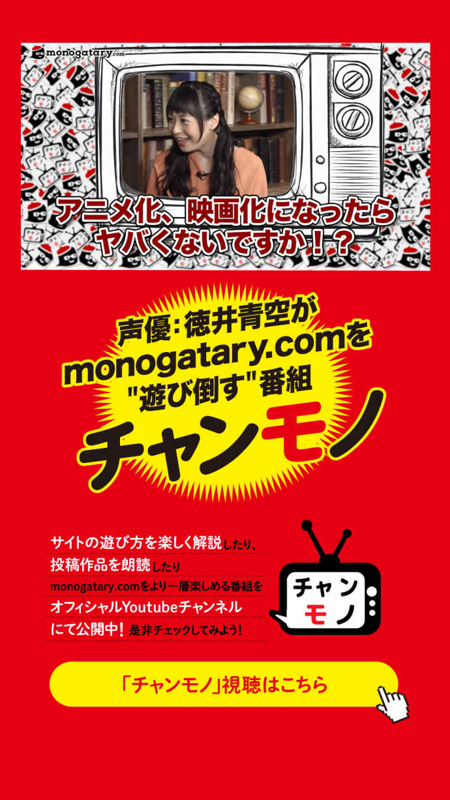
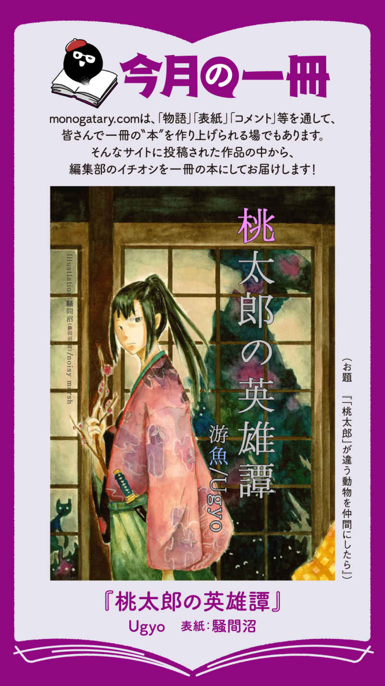
昔々、といっても17 年ほど前の事だが、片田舎で柴刈りを生業に慎ましく暮らしていた老夫婦の家にいきなり赤子が現われた。
小さな村だ。急に現れた赤子の存在は、瞬く間に村人全員が知るところとなり、村人達は、やれ〝独り立ちした息子が他所で作った子を親に預けている〟だの、〝いいやアレは爺さん自身が若い女に手を出して出来た子だ〟だの口さがない噂を言い立てた。
しかも、婆さんが「この子は桃から生まれてきた」なんて突拍子もない事を言い続けたもんだから、赤子は大人から好奇と哀れみの視線を向けられ、同年代の子供達からは虐められ続けた。
それでも体だけはすくすくと人一倍丈夫に育ち、その赤子も今では立派にろくでもない青年へと成長していた。
――まぁ、私のことなんだが。
かぞえでもう18 にもなるのに、嫁どころか、まともな人付き合いすらままならない。この先、私は真っ当な人生をおくれるのだろうか......。
「桃太郎、ちょっと洗濯をお願いできるかしら？」
薪割りに鬱屈した気持ちをぶつけていると、不意に後ろから呼びかけられた。振り返ると、洗濯物でいっぱいの籠を両手に抱えた老婦人が、こちらを見てニコニコと微笑んでいる。
この人こそ、私が村で浮きまくる原因となった出生話を平然と語り続け、そしてそれに追い討ちをかけるように、〝桃太郎〟なんて珍名を付けた張本人、私の養い親のお婆様である。
歳を取っても訛りのない娘言葉を使っているのは、若い頃、大名のお屋敷で女中をしていて身に付いたのが抜けないからだそうだ。品の良い佇まいと、貧乏くさい服装が何ともちぐはぐである。因みに、彼女に養育された私も、この田舎では不自然な言葉遣いが身についてしまっている。
「分かりました。この薪を割り終わったら行って参りますので、そこに置いておいてもらえますか？」
「ごめんなさいねぇ。いつもこんな事を頼んで。でも今日は腰が痛くって」
「親を労わるのは子の務めですよ、お婆様。無理をしないでください」
色々思うことはあっても、やはり私にとっては唯一無二の大事な母である。健康で長生きして欲しい。上京したっきり音沙汰のない本物の息子（便宜上、兄と呼んでいる）の代わりに、年老いた両親の世話をするのが自分の務めだと思っている。
「まぁ、桃太郎は嬉しいことを言ってくれるのね。今日はとても良いお天気だから、たくさん洗濯物ができるわ。こんな気持ちの良い日は、貴方の入った桃が流れて来たあの日を思い出すの......。素敵な息子を寄越して下さった神様に感謝しなくっちゃ」
のほほんと笑うお婆様に、私は内心ため息を吐く。お婆様にはカケラも悪気が無いのは分かっている。お爺様もお婆様も底抜けに善良で、他人の悪意にはとんと鈍いのだ。私がその生い立ち話で苦労しているなんて思いもしないのだろう。
多分、桃から生まれたという話も、捨て子だった私を傷つけまいと吐いた嘘ではないだろうか。私が生まれたのは疫病の大流行と不作の重なった年で、あちこちで口減らしが行われていたそうだ。間引かれ、河原にでも捨てられていた私を、このお人好しの夫婦が拾ってくれたというのが本当のところだろう。
家族分の洗濯物の入った籠を背負って、かつて私が流れて来たという件の川に向かっていると、傍道から山のような洗濯物の入った桶を抱えてヨロヨロと歩いて来る少女の姿が見えた。
幸い、洗濯物に視界を遮られてまだ私には気づいていないようだ。そっと気配を殺し、別の道を行こうとした時、少女が大きくよろめく。
「きゃっ」
「危ない！」
私は慌てて三間ほどの距離を跳躍し、派手に地面に突っ込もうとした少女を支える。
「わ、すみません！ ありがとうございます。......あ、桃太郎さん」
少女は顔を上げると、私を見て小さく息をのんだ。
「怪我はない？」
少女はコクコクと頷くと、慌てて私から一歩後退る。
見てみれば、少女は知った顔だった。この辺りを取り仕切る庄屋の次女、華だ。私はなるべく彼女の顔を見ないようにして、地面にぶちまけられた布切れを拾い集める。
「も、桃太郎さんも今から川に洗濯しに行くん？」
「ああ、そのつもりだよ。華はなぜ川まで？ 華の家からだと井戸の方が近いだろう」
華はもじもじと指を絡ませながら俯いて答える。
「きょ、今日はお姉ちゃんが来れへんから、川に行ってもいいかなって......」
華は大人しい性格のようだから、近所のおばさん達が大勢集まる井戸端に一人では行きづらいのかもしれない。
しかし、井戸の遠い我が家くらいしか川で洗濯などしないと思っていたが、こうして誰かが来るとなると人目を気にしなければならなくなる。
――私と一緒にいたなんて知られたら、華にまで変な噂が立ちかねないよなぁ。
「じゃあ、気をつけて」
出来れば荷物を持ってやりたいが、私の隣を歩くのは嫌だろう。
私は、自分の背負ってきた籠を空にして、代わりに華が持ってきた服を畳んで入れると、華に差し出す。
「籠は明日、受け取りに行く。桶より籠を背負う方が楽だろう」
「あ、ありがとう......」
籠を受け取る華の顔は真っ赤になっていた。受け取った籠を抱きしめながら、か細い声でお礼を言う。
――あ、しまった。さっき女性用の下着まで畳んでしまった......。
多分それで赤面させてしまったのだろう。変人の上に変態の汚名まで加わってはかなわない。私は表情を取り繕うと、大急ぎで自分の洗濯物をまとめ、早足でその場を去った。
――今日はいつもより上流で洗濯しよう。
少し足場は悪くなるが、華を避けるためには仕方ない。
人気のない河原で黙々と洗濯をしていると、ふと黒い影が日差しを遮った。見上げると一羽の大きなカラスが頭上をぐるぐる旋回している。
『もーもたろさん、ももたろさん♪ お腰につけたきびだんご、一つわたしに下さいな♪ 』
カラスは変な節をつけて歌うと、私の頭に着地する。
「......朝から何だ、黒丸。また嫁さんの腹の調子でも悪いのか？」
私が桃から生まれたという与太話を信じてもいいかと思うのは、こういう時だ。これを他人に言えば、確実に頭のおかしい人間だと思われるだろうが、私は自分が名前を付けた動物となら、話すことができる。
そしてもう一つ......。
『ちげーよ！ それなら報酬なんて要求しねぇって。今度は人間。村に鬼が来てたぜぇ？』
どういう訳か、私には病気の元である病鬼や、瘴気の流れが見えるのだ。そして其奴らは、私が追い立てると大体が逃げて行く。
なぜ自分にだけあんなモノが見えるのだろう。お爺様が都に住んでいた若い頃、読んだ書物にこんな一節があったという。
―― 〝桃は五行の精なり。邪気を圧伏し百怪を制す〟か......。
もしかしたら、あれは桃から生まれたと言われ続けたせいで見える幻かもしれないな、と思いながらも、見えるからには放っておけない。
私は最後の洗濯物を洗い終えて立ち上がった。
「分かった。今夜、祓いに行こう。どこの家だ？」
『オレは前払い制だぜ？ きびだんご寄越せ。干し柿でもいいぞ』
「今私の腰に付いてるのは洗濯板だよ。見たらわかるだろう？ あとで食わせてやるからさっさと吐け」
私が足を引っ掴んでひっくり返すと、黒丸はしばらく目を白黒させて硬直した後、ギャーギャー叫び始めた。
『この暴力男！ 離しやがれ！』
こいつは一回帰すと、人間に祟る病鬼のことなどすっかり忘れてしまうだろう。そうすると、私は当てもなく村中を探し回る事になる。
「場所は？」
『あーもう！ 庄屋の与作ンとこだよコンチクショウ！』
「庄屋か。あそこは塀があるからな......」
塀を乗り越えて入るのは簡単だが、もし見つかったら言い訳のしようが無い。さっき華に貸した籠を受け取りに行く時に、どうにか中の様子を見られないだろうか。弱い鬼なら、私が近付いただけでも逃げて行くはずだ。
『おい！ 桃太郎！ はーなーせっ！ いい加減にしろ！』
「ああ、ごめん。ありがとう」
私が手を離すと、黒丸はくるりと一回転して地面に着地し、神経質に羽繕いをする。
『くそっ！ オレの艶やかな羽が乱れちまったじゃねぇか！ 嫁さんの腹を治してもらった恩が無けりゃ、その目玉くり抜いてやるところだぜ』
ガーガーとけたたましく騒ぎながら黒丸は再び私の頭に乗っかる。無理に追い払おうとすれば、髪を毟られるのは経験で分かっている。仕方なく、私はそのまま帰路についた。こんなところを見られたら、また変人扱いされそうだ。
私は無駄だと悟りつつも、黒丸に声をかける。
「そこを退け。きびだんごは夕方取りに来い」
『いつもの倍を要求するぞ！』
黒丸は私の言葉など意に介さず、頭の上に座り込んで羽をばたつかせた。
『しっかし、お前さんも物好きだよなぁ？ 普通、自分を蔑ろにする人間を助けるか？ 誰に頼まれたわけでもないのによぉ』
「大した手間じゃないからさ。見て見ぬ振りは出来ないだろう」
私は体力も腕力も人並み以上にあるし、深夜に鬼を祓うのもそこまで苦にならない。誰に知られずとも、私にしかできない事で誰かの役に立っているのならそれで良い。
『だけど、夜な夜な見えねぇモノを追いかけ回すお前さんを見たら、村人はどう思う？』
「......お前に関係無いだろう」
『心配してやってるんだって。お前さんが望むなら、オレの傘下に加えてやってもいいんだぜぇ？』
「馬鹿な事を言うな。......人間がカラスの仲間になれるか」
黒丸はケッケッと喉を震わせて人間の笑い声を真似ると、嘲るような声を出した。
『人間？ 誰にも仲間だと認められないのに？』
「......私は」
「桃太郎さん、カラスの仲間になっちゃうん？」
思わぬところから声を掛けられて、私はびくんと跳び上がった。黒丸が不満げに鳴いて頭から飛び立つ。
「は、華！？ 何でここに？」
軽く息を弾ませながらこちらを見上げる華に、私はジリジリと後退る。
どこまで聞かれていたのだろう。カラス相手に独り言を言う危ない奴だと思われたかもしれない。
「だって、桃太郎さんすごい速さで先行ってしまうんやもん。いつもこんなとこまで来とるん？ 大変やねぇ」
華は特に私を気味悪がる様子も見せず、「あっという間に見えへんようになってしもたんよ」と言いながら躊躇いがちに笑顔を浮かべた。
「話しかけたらあかんかった？ カラスさん、行ってしもたね」
「いや、それより......。その、私が不気味じゃないのか」
「不気味やないよ！ お父もお母も、みんな適当な事言って楽しんでるだけや。わたしは桃太郎さんが優しいの知っとる。だから怖ない。優しいから、カラスさんともお友達になれるんやね。わたしもな、その......桃太郎さんとお友達になりたいねん」
「お友達......」
私は衝撃でしばらく無言になった。たとえこれが〝動物にしか心を開けない可哀想な人に優しくしなきゃ〟という同情心から来た言葉であったとしても、物凄く嬉しい。
「ここまで登るのは大変だっただろう？ 籠を貸して。持つよ」
「え？ 桃太郎さん、もう終わったんやろ？ 洗濯物、はよ干さなあかんで」
「いいよ。もう少し下流に行こう。そこの方が洗いやすい」
どちらにせよ、川に来る人は少ない。私が華と親しげに話していても、見咎める人はいないだろう。
――親しげに話す！ 家族以外の人と！ ついに私にもこんな日が......。
人生17 年目にして初めて友人と呼べる人間が出来るかもしれない。私は感動に打ち震えた。湧き上がる温かい気持ちに、つい頬が緩んでしまう。
「水を吸ったら、余計重たくなるだろう？ 運ぶのを手伝うよ」
華はしばらくぼんやりと私の顔を見つめた後、消え入るような声で礼を言った。
「......ありがとう」
顔を見て言われるお礼の言葉に涙が出そうだ。私は張り切って華を手伝い（もちろん下着には手を出していない。同じ轍は踏まないのだ）、洗濯物を背負って足取り軽く華の家に向かった。
せっかくなのでこのまま華の家の様子を見ておくつもりだ。華と一緒なら、家の中まで上げてもらえるかもしれない。
「そういえば、どうして今日はお姉さんと来られなかったんだ？ もしかして体調が良くないのか？」
探りを入れると、華は顔を曇らせて首を振った。
「ううん。お姉ちゃんは元気よ。体調悪いんはお母やねん......。何日か前から気分が悪いゆうててんけど、今日は床も上げられへんねん」
――黒丸の奴、しばらく黙ってやがったな。
きっと、腹が減った時に知らせに行こうとでも思っていたに違いない。
「心配だな。私が見舞いに行ってもいいか？」
そう訊くと、華は口籠った。
「......そうだよな、私が行けば、迷惑になるな」
「あ、いや、違うんよ。その、今日はお祓いにお坊さんが来てくれてるはずやから、お客さんが来るのはどうかなって......」
「お坊さん？」
「うん。この近くに霊山があるんだって。修行しに来てたお坊さんがね、うちに良くないものが居着いてるって言って、お祓いしてくれることになったの」
――それは、私と同じモノが見えるという事だろうか。
これまで私は、鬼の姿が見えると言う人に会った事がない。もし、私以外にもあの鬼達の姿が見えるというのなら、それは鬼が本当に存在しているという証拠にならないだろうか。私がおかしいから見える幻じゃない。そう確信が持てるんじゃないか......。
「華、お願いだ。その御坊に会わせてくれ」
私はずっと不安だった。自分にははっきりと見えるモノが、他の誰にも見えないのだから。
鬼の恐ろしい姿が怖くて、近づく事も出来なかった幼い頃、村娘にまとわりつく巨大な病鬼を見て「あのお姉さんが死んじゃう」と泣いた事があった。そして程なく、私の言葉通りその村娘は肺を病んで死んでしまった。
それ以来だ。周囲が私に向ける視線に、恐怖が混じるようになったのは。当時は私の通った後に、塩を撒かれる事もあった。
まるで私が不吉の象徴であるような扱いをされても、それを否定出来るような根拠が無い。何しろ私自身、そこに本当に鬼がいるのか確信が持てなかったのだから。
自分と同じモノが見える相手に会いたい。自分の頭がおかしい訳じゃないと思いたい......その一心で、思わず華の肩を掴むと、私は頼みこむ。
「迷惑なのは承知だ。しかし出来ればそのお祓いとやらに同席を......」
「わ、わ......も、桃太郎さん、近い......」
華に涙目でそう言われた私はハッと我にかえった。
「すまん！ 痛かったか！？ 」
跳び退って両手を挙げると、私は慌てて謝る。勢い余ったとはいえ、いきなり掴みかかるなんて私はなんて事をしてしまったんだ。これで華に「桃太郎さん怖いから友達になるのやめる」なんて言われたら、私は当分立ち直れない。
「だ、大丈夫。びっくりしただけ。分かった。頼んでみるな。無理そうやったら、あとでお坊さんに紹介してあげる。大事なことなんやろ？」
華は私の所業も咎める事なく、真剣な表情で請け負ってくれた。
「ありがとう。......持つべきものは、良い友人だな」
後半早口になりつつも、勇気を振り絞ってそう言うと、華は頬を染めながらはにかんだ。
「うん......お友達の、ためやもん。当然よ」
――人間の友達が出来た......！
これでもう黒丸に憐れまれる事もない。腐らず誠実に生きていれば、浮かぶ瀬もある。お爺様の言う通りだ。
友人の家を訪れるというのは、鬼を退けるための時とはまた違った緊張感がある。私は落ち着かない気持ちで、無駄に立派な庄屋の門前に立った。家主の性格を反映してか、この家は門構えだけはやけに仰々しい。
足元に柔らかな物が触れる感触がして見下ろすと、太ったぶち猫が私の足に頭を擦り付けていた。猫は、短いかぎ尻尾を震わせながら途切れ途切れに声を出す。
『きた、きた、ももたろう。あれ、あぶない、にょ』
自分が名付けた訳でなくても、人に名前をつけられている動物となら、多少の言葉を交わすことは出来る。しかし、あまりにたどたどしくて、何を伝えたいのか分からないことが殆どだ。
「何が危ないんだ？」
華に聞こえないよう、声をひそめて問い返すと、猫はパッと私から離れて走り去った。振り返りざまに、やはりよく分からない言葉を呟く。
『いやなの。こわいこわい、にゃ』
――一体、何の事だ？
立ち止まった私をよそに、華は門の潜り戸を開くと手招きした。
「桃太郎さんもどうぞ、入りぃ」
「しかし......」
「大丈夫よ。荷物持ってもらったんやもん。縁側でお茶の一杯くらい、飲んでもらっても怒られへん。縁側座って待っとって」
そう言うと華は屋内へ姿を消した。私は躊躇しながらも、華に続いて門をくぐる。
途端、体に冷水を浴びせかけられたような悪寒が走った。まるで空間に紗がかかったように辺りが暗くなり、薄墨を流したような瘴気の帯が、ユラユラと宙を漂うのが目に映る。
――なんだこれ。
一歩踏み出すと、瘴気は泳ぐ蛇の様にうねって私を避け、私の通った後は、薄布が裂ける様に闇が晴れる。ここまではっきりと分かりやすく瘴気が見えるのは初めてだ。私は洗濯籠を軒先に放り出すと、縁側に上がって障子を開けた。
「なっ......桃太郎！？ あんた他人の家に断りもなく上り込むなんて、どういう神経してんのよ！？ 」
勢いよく障子を開いた私に、菓子の載った盆を手にした女が甲高い声を上げる。美しい顔に浮かぶ見慣れた嫌悪の表情に、私は思わず顔をしかめてしまった。
彼女は華の姉である幸だ。私と同い年で、女の子達の纏め役だった。否応なく蘇る、幼少時に散々虐められた嫌な思い出を記憶の底に押し戻し、私は感情を殺した声を出す。
「幸......。悪いがちょっと上がらせてくれ。お母上はどこにいる？」
答えを待たず、私が瘴気の濃い方へ向かおうとすると、幸は私の前に立ち塞がった。
「誰があんたなんて家に上げるもんですか。この厄病神、さっさと......」
「お姉ちゃんっ！」
華が咎める様な高い声をあげて玄関の方からトタトタと廊下を走って来ると、幸と私の間に割って入る。
「違うんよ。桃太郎さんはな、私の荷物を家まで運んでくれはってん」
慌てて姉にそう言い繕うと、華は私をチラリと見て申し訳無さそうに俯いた。
「華！ こいつとは関わったらあかんて言うたやろ！？ 桃太郎、うちの華に近づくなんてどういうつもり？ あんたの下心なんて見え透いてんのよ。華が気ぃ弱いからって......」
「ちゃうて！ 桃太郎さんはお友達！ 今日はお坊さんに会わせてあげよう思てわたしが連れて来たんよ！」
普段大声を出さない華が、声を荒げて必死に言い返している。
「......どうかされましたか？」
その声が聞こえたのだろう。よく響く低い声と共に、奥の襖が開かれた。そちらに目をやった瞬間、私の腕に鳥肌が立つ。
開いた襖から、擦り切れた袈裟を着た長身の男が顔を出していた。どこか人形じみた整った顔立ちのせいか、外見だけではその年齢を推し量り難い。そしてその背後の部屋からは、見たこともないほど濃い瘴気が渦を巻いて吹き出していた。
「何か言い争っていらっしゃるようですが」
「まぁお坊さま、失礼致しました。直ぐにお茶とお菓子をお持ちしますね」
幸は私に向けるのとは打って変わって取り澄ました声を出すと、こちらを一瞥し、「さっさと帰りな」と低く呟く。
「そちらの方は、拙僧に会いにいらしたのでは？ せっかく来て下さったのに追い返してしまうのも酷でしょう。私はご一緒しても構いませんが」
「ありがとうございます」
幸に口を挟む隙を与えず、私は奥の間にまで押し入って僧に歩み寄る。
「御坊が邪を祓われると聞き及びまして、私も何としてもその御技を拝見したいとまかり越した次第です」
「さようでしたか。そういうことでしたら、ええ、是非ご覧になって下さい。仏の恩徳を教え広めるのも、拙僧の務めですから」
私は礼を言いながら、僧の様子をそっと窺う。この僧にも瘴気が見えているのなら、瘴気が私を避けているのが分かるはずだ。しかし僅かに微笑むだけの その顔からは、何の反応も読み取れない。
「桃太郎さん良かったな！ わたし、お茶いれて来る！」
華は一方的にそう宣言すると、台所へ走って行った。
「華！ 先に物干しやろ！」
幸は華の後ろ姿に声をかけると、私を見て苦々しげに溜息を吐く。
「......お坊さまの前じゃ、あんたも悪さでけへんやろ。隅で静かに座ってな」
襖の奥は酷い状態だった。障子越しに日が降り注いでいるはずなのに、部屋いっぱいに立ち込めた瘴気で、物の輪郭が分からないほど薄暗くなっている。
そしてその瘴気の根源、部屋の真ん中では、華たちの母が布団に横たわり苦しげな呼吸を繰り返していた。それを囲む大小様々な鬼達が、私を睨んではギッギッと耳障りな声で鳴き交わす。こんなに大勢の病鬼が群がっている病人をこれまで見たことがない。
――見慣れない姿の鬼が多いな。
これまで数々の鬼の姿を目にしてきたが、大半がくすんだ赤褐色や青灰色の肌をしていた。しかし、今ここにいる鬼の殆どが、濡れたような艶のある赤黒い肌をしている。しかも、いつもなら私の姿を見ただけで逃げて行くような小さな鬼も、逃げようとする素振りも見せずに居座ったままだ。
妙に人間臭い顔つきでじっとこちらを睨む鬼達に、気分が悪くなりそうだった。鬼に対して久しく感じる事のなかった恐怖が、じわじわと湧き出てくるのを感じる。
ともかく、早く鬼共を祓わなければ手遅れになりかねない。チラリと斜向かいに座る僧に目をやるが、僧は平然と出された菓子をつまみ、茶を啜っていた。駆け回る小鬼がその裾に触れても、眉ひとつ動かさない。
「御坊、お祓いはまだされないのですか」
しびれを切らして私が声をかけると、僧は抑揚のない声で応える。
「ご家族がお揃いになったら始めますよ。邪なモノは、病人ひとりだけでなく、同じ屋根の下でも暮らす者にも少なからず影響を与えているのです。祓うならば、一同に行った方がいい」
その意見には一理ある。病鬼は身近な人にまで取り憑いてしまっていることも多い。どういった方法で祓うつもりなのか分からないが、一度に行う方が効率的なのだろう。
病床から聞こえるヒューヒューと掠れた呼吸音と、神経を逆撫でする様な鬼共の鳴き声が響く中、私は家主である与作が帰宅するのを今か今かと待っていた。こうしている間にも、華の母の命はすり減っている様に見える。何度人目をはばからず、自分で鬼を追い祓ってしまおうと思ったかしれない。まるでつきたての餅の様に時間がベタベタと伸びている様なもどかしさに、私は唇をかむ。
「桃太郎さん、お茶どうぞ。二番煎じやけど、いいお茶よ」
華が私に茶を運んで来た。おぼつかない手つきで私に給仕をしてくれた後、病床の母の側に寄って首筋の汗を拭い、額の濡れ布巾を取り替える。
その背に、数匹の鬼達がよじ登ろうとするのを見て、私は思わず華を呼び寄せた。
「華！ ......ちょっとこっちで、話を聞かせてくれないか」
私は瘴気や鬼が決して近付こうとしない私の近くに華を招き寄せ、声を潜めて話しかける。
「お母上はずっとこんな調子なのか？」
「う、ううん。昨日までは、しんどいって言いながらも普通に動けてたんや。やけど昨日の晩、急に倒れてしもて、もう、びっくりして......。そしたら丁度、あのお坊さんがね、訪ねて来てくれはったの」
「調子が悪くなったのはいつから？」
「５日くらい前やったかなぁ」
確かに鬼が憑いて体の弱った人には、徐々に他の鬼も群がってくる事が多い。しかし、これだけの鬼が集まるにはもっと時間がかかったはずだ。一体いつ、どこからこれだけの病鬼が沸いて出たのだろう。
森を寝床にしている黒丸が、村に下りるのは昼の間だけだ。ここまで病鬼が群がっているのを見かけたのなら、流石にすぐ報告に来たはず。
――昨日の夕刻から今朝までに、何かあったに違いない。
「お母、休まんと無理して仕事したりするから......」
心配げに母を見ながら「早う良くなってくれたらええんやけど」と呟く華の横顔に胸が締め付けられる。私なら、今すぐに大方の鬼を祓う事が出来るだろう。それなのに、自分が変に思われたくないが為に、黙って何もせずにいるのだ。
「遅くなって申し訳ない」
やがて、家主の与作が帰宅した。幸から私が来ている事は聞いていたようだ。華の隣に座する私に射殺すような視線を向けながらも、僧を前に何も言わなかった。
「大変お待たせしました、御坊殿。急かすようで申し訳ないが、さっそく妻の病を治して下さい」
与作の言葉に、僧はちらりと私に目を向ける。
「......事前にお話しましたが、完全に邪を祓うには時間がかかります。その間、他の人が訪ねて来ると、術の妨げになりますが」
「ええ、近所の者には周知しております。門も閉ざしましたので、もう邪魔が入る心配はございません」
与作は私を見て口元を歪めつつも、切迫した声で答えた。
村人から集めた年貢から随分な上前を撥ねて私腹を肥やしているなんて噂もある横柄な与作だが、妻と娘達のことは何よりも大事にしている。大切な妻が倒れた時に、私なんぞに拘っている余裕はないのだろう。
僧は鷹揚に頷くと、穏やかに微笑んだ。
「分かりました。......では、始めましょう」
【monogatary.com 月間ランキング】
〔物語〕
〔表紙〕
〔ユーザー総合〕
【今月の特集お題『タイムリープがある物語』】
〔物語〕
〔月間ランキング〕
【偏愛ですが、何か？】
【今月の一冊】
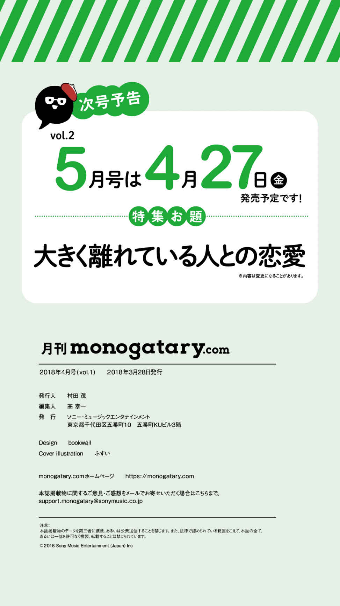